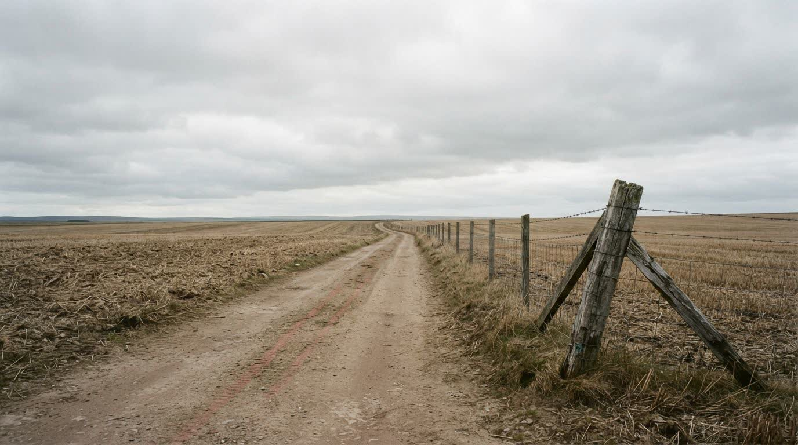
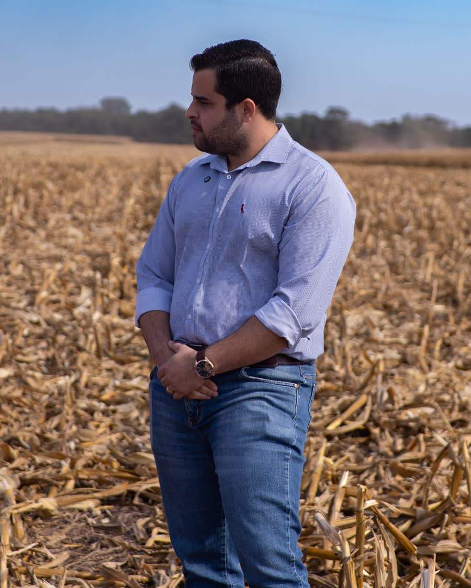
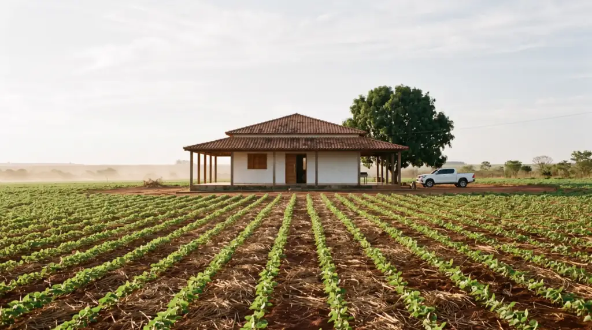

Recuperação judicial não é o único caminho.
Antes de escolher, eu olho dívida, garantia e caixa, e te digo qual porta faz sentido.
Lucas Cabral · OAB/GO 67.854Responde em até 2 horas, em horário comercial
Prefere que eu te ligue?
- Deixe nome, WhatsApp e cidade aqui.
- Eu respondo em até 2 horas, em horário comercial.
- Na primeira conversa eu te digo, com honestidade, se recuperação judicial é o caminho. Sem custo.

Lucas Cabral, advogado do produtor rural.
Acompanho Plano Safra, Banco Central, CNJ e STJ. É dessa leitura que sai a análise do seu caso, não de modelo de petição.
O que já passou pela mesaaté 2026
- Dívida ruralR$ 200 mi
- Famílias produtoras70
- Casos com a garantia no centro30
Experiência acumulada, incluindo a atuação anterior à abertura do escritório.
Perguntas de quem chega aqui
Produtor pessoa física pode pedir?
Pode. O STJ fixou no Tema 1.145: mais de dois anos de atividade, e o registro na Junta Comercial pode ser feito na hora do pedido.
O que o CNJ passou a exigir?
O Provimento 216/2026 pede dois anos de atividade, Livro Caixa Digital, declaração de IR, dívida rural separada da pessoal e plano com número real.
Todas as minhas dívidas entram?
Não. Só a dívida da atividade rural e registrada. A pessoal fica de fora.
Isso fecha o meu crédito?
É processo público e pesa com credor e fornecedor. Esse custo entra na balança antes de decidir.
